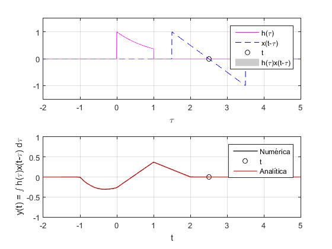
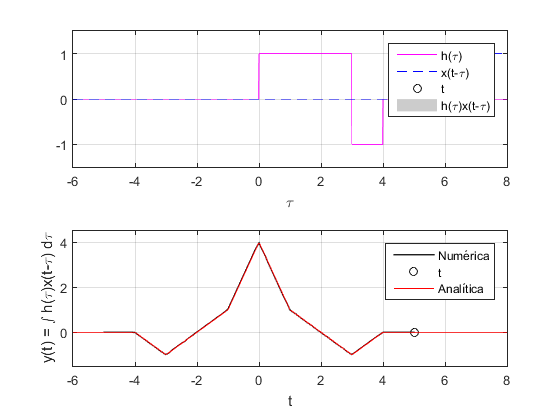
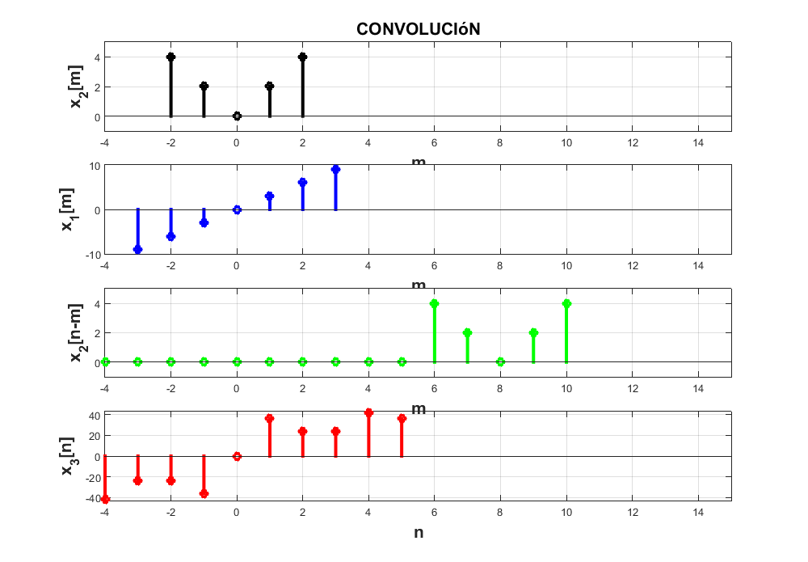
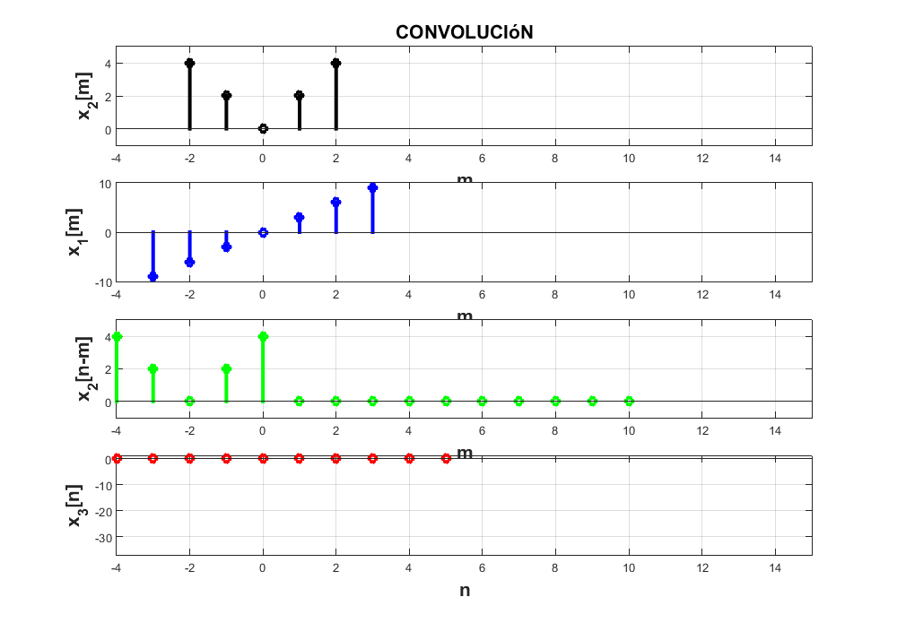
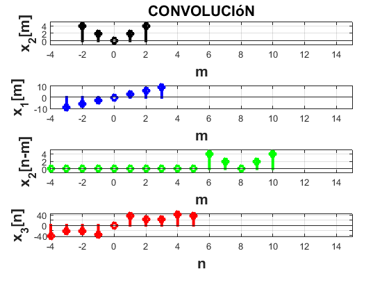
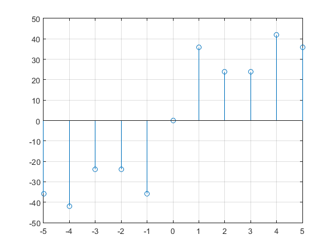

RPL04 Convolución y correlación de señales en tiempo continuo.
Caudillo Barbosa Eric Olea García Bryan Darío
Contents
Introducción.
DESCRIPTIVE TEXT
Resolución del PR04.
A continuación se analiza el problema 1. del PR04. Se realiza la convolución de la señal:

con la señal:

Se muestra la gráfica de la convolución numérica con la función "convconm", se modificó con el fin de poder modificar los límites, los intervalos de integración y agregar una función para el resultado analítico.
El resultado numérico se muestra con un color negro y el resultado analítico se muestra de un color rojo.
clear all; close all; clc; f = @(t) exp(-t).*(t>=0 & t<=1); g = @(t) t.*(t>=-1 & t<=1); dtau = 5e-3; tau = -2:dtau:5; tvec = -1.5:.1:2.5; lims = [-1.5 1.5;-1 1]; res04 = @(t) 0.*(t<-1 & t>2) + (2*exp(-t-1) + t -1).*(t>=-1 & t<0) + ... ((2-t)*exp(-1) + t -1).*(t>=0 & t<1) + ((2-t)*exp(-1)).*(t>=1 & t<=2); convconm(g,f,res04,tau,dtau,tvec,lims);

Para poder notar las diferencias entre el resultado numérico y analítico, se realiza un aumento en la sección marcada.


Resolución del PR05.
A continuación se analiza el problema e) del PR05. Se realiza la autocorrelación de la señal:

Conocemos la propiedad de la convolución para resolver correlaciones, y tenemos una función que nos ayuda a resolver convoluciones, así que podemos resolver el problema por la siguente ecuación:

El resultado numérico se muestra con un color negro y el resultado analítico se muestra de un color rojo.
x1 = @(t) 0.*(t<0) + 1.*(t>=0) - 2.*(t>=3) + 1.*(t>=4); x11 = @(t) 0.*(t<0) - 1.*(t>=0) + 2.*(t>=-3) - 1.*(t>=-4); dtau = 1e-2; tau = -6:dtau:8; tvec = -5:.1:5; lims = [-1.5 1.5;-1.5 4.5]; res05 = @(t) 0.*(t<-4 & t>4) + (-t-4).*(t>=-4 & t<=-3) + (t+2).*(t>-3 & t<=-1)... + (3*t + 4).*(t>-1 & t<=0) + (-3*t + 4).*(t>0 & t<=1) + (-t + 2).*(t>1 & t<=3)... + (t-4).*(t>3 & t<=4); figure; convconm(x11,x1,res05,tau,dtau,tvec,lims);

Para poder notar las diferencias entre el resultado numérico y analítico, se realiza un aumento en la sección marcada.


Convolución discreta Lathi 3.1.1
A continuación se analiza el problema 3.1.1 Se realiza la convolución de dos señales discretas.

figure; n1 = -3:3; x1 = [-9 -6 -3 0 3 6 9]; n2 = -2:2; x2 = [4 2 0 2 4]; convdisc([n1;x1],[n2;x2]);
Correlación discreta Lathi 3.1.1
A continuación se analiza el problema 3.1.1 Se realiza la correlación de dos señales discretas.
Conocemos la propiedad de la convolución discreta para resolver correlaciones, y tenemos una función que nos ayuda a resolver convoluciones discretas, así que podemos resolver el problema por la siguente ecuación:

figure n1 = -3:3; x1 = [-9 -6 -3 0 3 6 9]; n2 = -2:2; x2 = [4 2 0 2 4]; convdisc([n1;x1],[n2;x2]); 
Como podemos observar, la inversión de la señal x2[n] es la misma señal x2[n],por lo que, en este caso, el resultado es igual a la convolución.
Convolución con CONV de Matlab.
A continuación se analiza el problema 3.1.1 Se realiza la convolución de dos señales discretas con la función "conv(f,g)".
La función conv comienza a realizar la convolución de la señales tomando como su inicio un n=0, por lo que para compensar este cambio, hay que retrasar o adelantar el resultado utilizando la propiedad:

En este caso, x1 se atrasa 3 unidades y x2 2 unidades, por lo que el retraso total en la convolución sería de 5 unidades.
El retraso total se aplica en el vector n que dará sentido a la gráfica.
figure;
x1 = [-9 -6 -3 0 3 6 9];
x2 = [4 2 0 2 4];
n = -5:5;
y = conv(x1,x2);
stem(n,y);
grid on;
